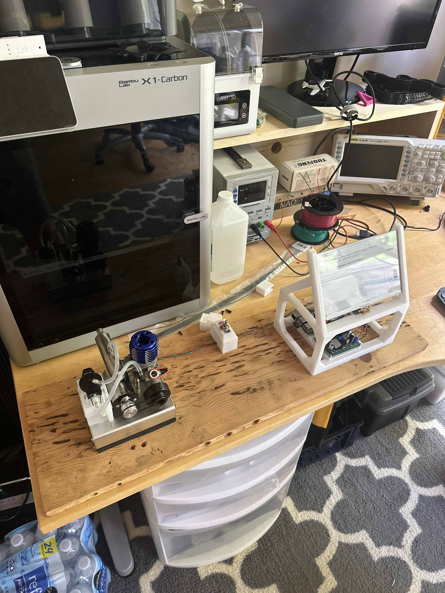

From the Workshop
Nitromethane to Intelligent Thought Machine
A completely local LLM running on nothing but methanol and nitromethane...

Photo placeholder
Photo placeholder
Placeholder paragraph one: what is this project, and what got you started on it? Set the scene — where and when you work on it, and what draws you to it.
Placeholder paragraph two: dig into the details. What have you built, made, or learned? Mention specific milestones, materials, tools, or techniques involved.
Placeholder paragraph three: what's next? Future plans, lessons learned, or how this project connects to other parts of your life and work.
← Back to all projects